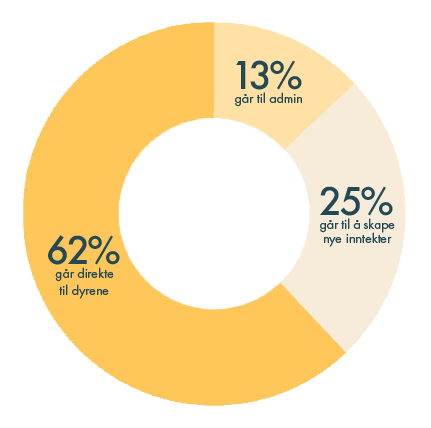

Et liv i fangenskap
Ville du bodd sammen med fire andre voksne mennesker i en kubikkmeter i?
Ingen tilgang til naturlig lys. Stå i avføring og ingen mulighet til å reise deg.
Slik er livet til burhønene før de blir sendt til slakteren.
I en kubikkmeter er det plass til ca 70 kyllinger.
Industriens sanne ansikt
Burhøns i eggproduksjon lider av alvorlige dyrevelferdsproblemer, som er konsekvensen av en
industri som har ett mål:
Flest mulig egg, billigst mulig.
Nyklekkede kyllinger blir sortert etter kjønn, og alle hanekyllinger avlives i kvern eller
gasskammer. Kyllingene får ingen omsorg fra hønemor som bidrar til atferdsproblemer som
aggressivitet, stress, skadelig fjærhakking og kannibalisme.
De lever livet i dunkel belysning for at de skal være passive.

Donasjon - Hva bidrar du til?
Ved å gi donasjoner til dyrevernalliansen bidrar du til å hjelpe kyllingene til bedre levevilkår.
Blant annet - mindre dyretetthet og tilgang på dagslys.
Hjelp dyrene som trenger det aller mest.